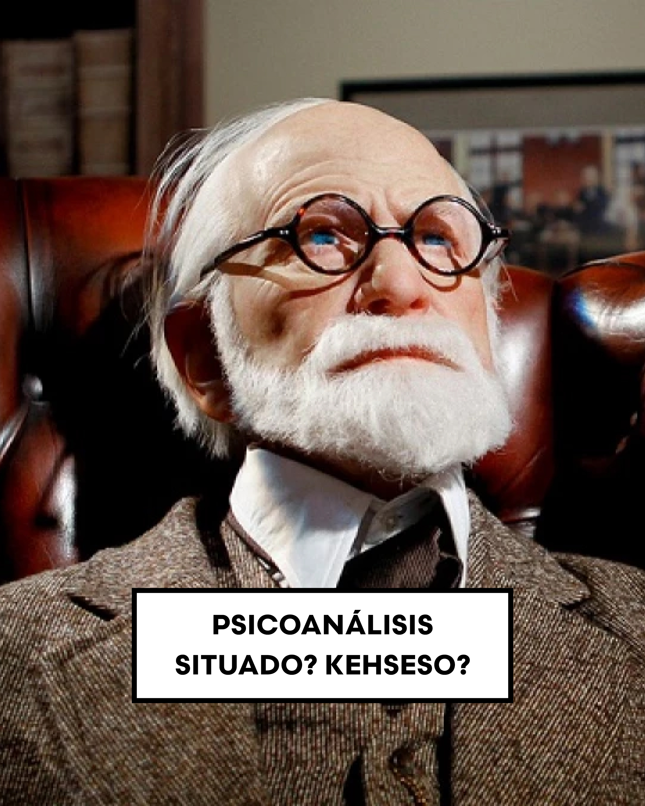
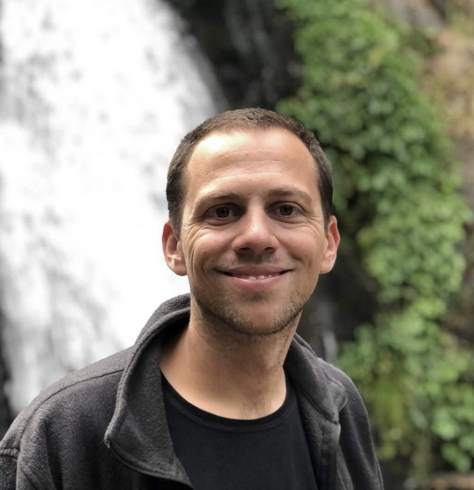
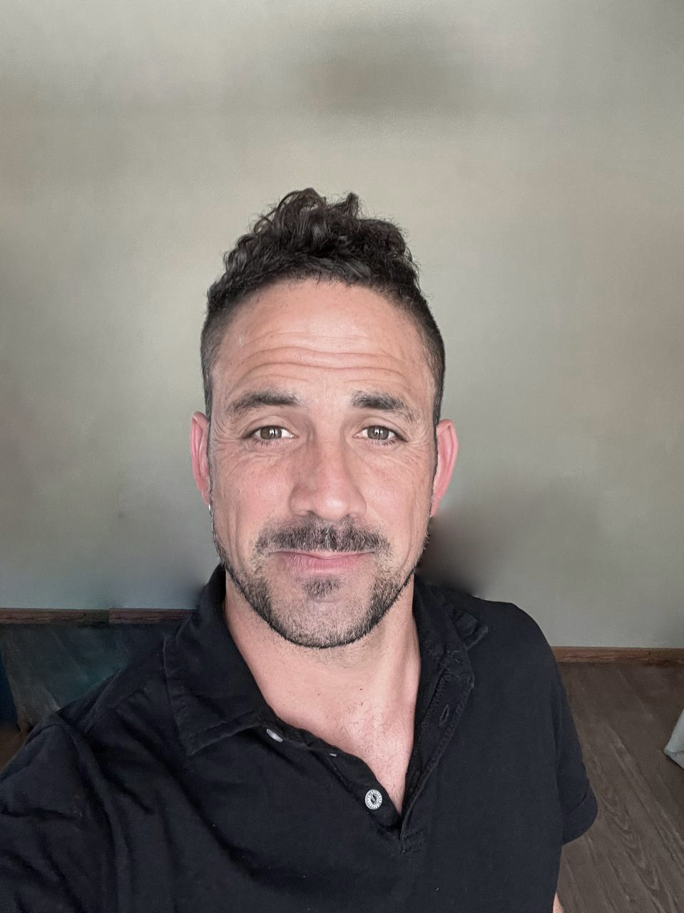

Ciclo de Formación
Desarmar la teoría para una práctica situada
Comienza en agosto 2026El enfoque
Este espacio es un compromiso con la lectura crítica y la producción de un saber-hacer desde acá —Sudamérica— y desde la actualidad. Como sostiene Lacan, el Psicoanálisis es una praxis para sentirse mejor, para no penar de más.
Creemos que la vigencia de los desarrollos freudianos nos permite escuchar mejor, aliviar a nuestros pacientes. Poder intervenir sobre el padecimiento subjetivo.
"La complejidad de los conflictos humanos obliga al analista a amigarse con el azar, con el 'No saber', con la incertidumbre. También con los obstáculos y con las inseguridades."
El paciente no atraviesa un espacio de terapia sin angustia, sin incertidumbres, vacilaciones, dudas. El analista cuando escucha tampoco. Ningún paciente está en un libro. Sumergirnos en la obra freudiana puede darnos pistas para sortear los atolladeros que la clínica conlleva.

La propuesta
Nadie llega a la obra freudiana desde cero. La noción de "grado cero" es una invitación: un retorno a los cimientos del pensamiento freudiano para recuperar su potencia subversiva. No se trata de leer a Freud como un archivo histórico, sino como una herramienta viva y punzante.
¿Puede su obra interpelar las nuevas desigualdades, la vida postpandemia? ¿Dialogar con la perspectiva de género, las guerras actuales, el uso del celular y las redes? ¿Sirve para interrogar las subjetividades contemporáneas? Un año para recorrer los textos, pero sobre todo, para dejarse interpelar por ellos.
Módulo 01
Revisión de los conceptos estructurantes: inconsciente, transferencia, repetición. Lectura situada desde el contexto latinoamericano.
Módulo 02
Las presentaciones actuales del malestar. Abordaje de las subjetividades del siglo XXI: vínculos, cuerpo, tecnología y lazo social.
Módulo 03
Cruces entre el cine, la literatura y la práctica clínica. Lectura de producciones culturales como vía de acceso a lo contemporáneo.
Módulo 04
Intervención y escucha analítica. El dispositivo clínico: encuadre, setting, manejo de la transferencia y el acto analítico.
Módulo 05
La práctica clínica en el sur global. Género, clase, territorialidad y diversidad como ejes de lectura y de escucha.
Módulo 06
Espacio clínico de cierre. Cada participante presenta un fragmento de su práctica para pensar en conjunto desde los recorridos del ciclo.
Quiénes enseñan

Psicólogo clínico con orientación psicoanalítica. Co-fundador de Cruces Analíticos. Trabaja en la intersección entre clínica, cultura y subjetividades contemporáneas.

Psicólogo clínico con orientación psicoanalítica. Co-fundador de Cruces Analíticos. Especializado en clínica con adultos y en la transmisión del psicoanálisis.
Cómo funciona
El ciclo se desarrolla en encuentros quincenales de dos horas, en formato virtual. Los grupos son reducidos para garantizar una escucha singular y un intercambio real entre los participantes.
Cada encuentro combina lectura teórica, discusión clínica y un eje cultural (película, texto literario, fragmento musical) como disparador de conversación.
El material del ciclo se comparte a través de Google Classroom, donde encontrarán los textos, grabaciones y recursos de cada módulo.
Escribinos para consultar sobre el programa, fechas y aranceles.
Los cupos son limitados.